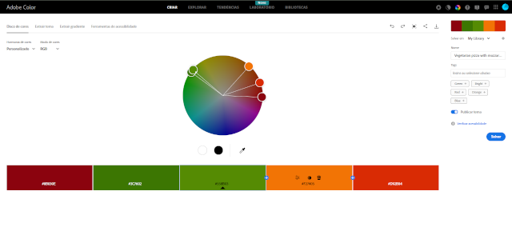

Adobe Color:
Busque referências nos seguintes sites:
site: https://color.adobe.com/pt/search?q=pizza
faça uma pesquisa em inglês sobre o produto, sensação ou sentimento que o cliente deseja transmitir atravpes do site.
Caso precise, adicione duas cores principais da logo em sua paleta de cores do site.
Editado a paleta, faça download:
